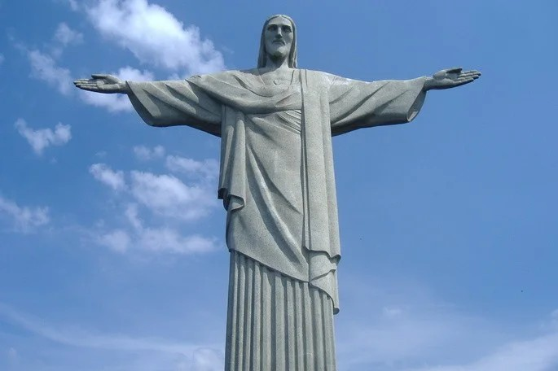
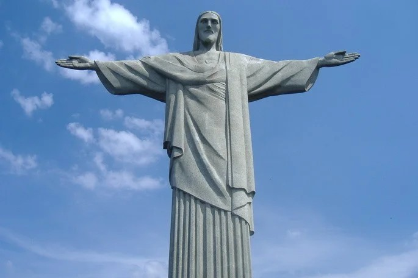

La idea de hacer un monumento en la cima del cerro Corcovado había nacido en el año 1859 del sacerdote Pierre-Marie Boss.
Este monumento sería, para él, un homenaje a la hija del emperador Pedro II, la princesa Isabel. Sin embargo, pasaría
mucho tiempo antes de que esa idea pudiera concretarse.
En efecto, será solo en la década de 1920 cuando el Círculo Católico de Río de Janeiro se disponga a dar cumplimiento
al sueño de construir un monumento en el Corcovado. La excusa será la celebración del primer centenario de la independencia
de Brasil.
 
En 1921 la Iglesia Católica convocó un concurso del que resultaría ganador el arquitecto Heitor da Silva Costa inspirado
en la obra del artista multifacético Carlos Oswald.
Para llevar a cabo el proyecto, se realizaron actividades de recaudación de fondos y se recibieron donaciones gracias al
espíritu emprendedor del cardenal Sebastião Leme, de la arquidiócesis de Río de Janeiro.
La obra no fue trabajada “in situ” sino que sus partes fueron encargadas a diferentes artistas, algunos de los cuales ni
siquiera llegaron a visitar nunca el monumento.
De este modo, cada parte de la escultura fue encargada a diferentes artistas. Es el caso de la cabeza y las manos, encargadas
al rumano Gheorghe Leonida y a Paul Landowski, artista polaco-francés.
Los cálculos de la estructura fueron hechos por el especialista en concreto armado, el ingeniero Albert Caquot. Junto a
Heitor da Silva Costa, supervisor de todo el proyecto, también se destacó Heitor Levy, su mano derecha, en el trabajo
de maestro de obras.
.jpeg)
.jpeg)
.jpeg)
.jpeg)